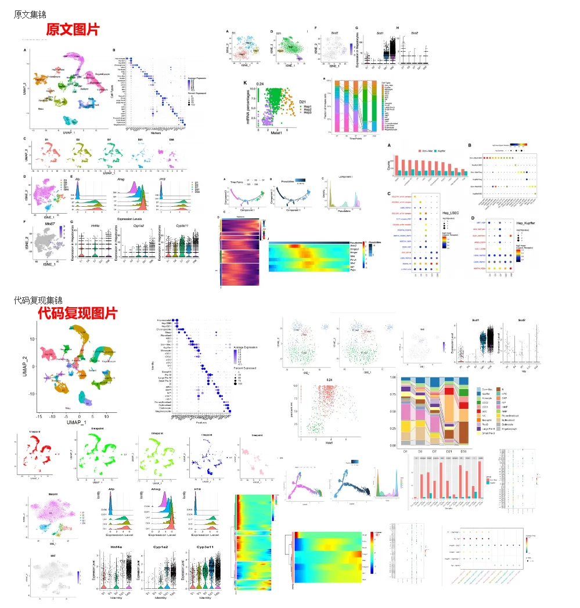
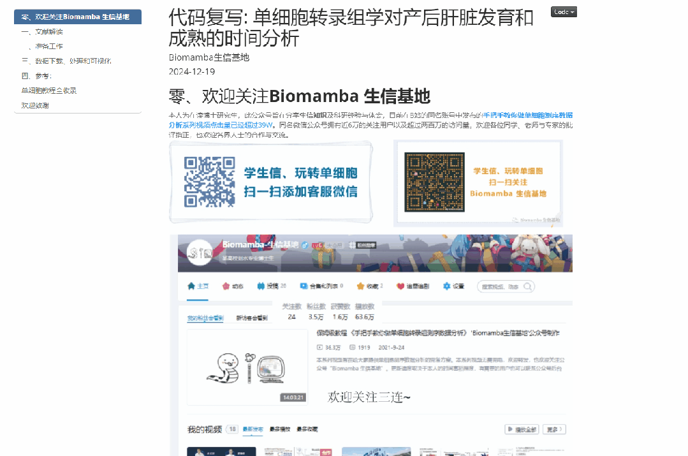
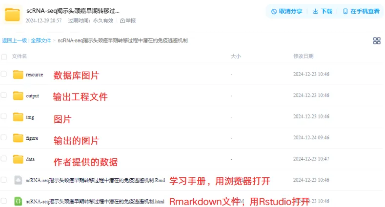

代码复写《Developmental Cell》|利用scRNA-seq对新生儿~成人肝脏发育和成熟的时间分析
原文：https://mp.weixin.qq.com/s?__biz=MzAwMzIzOTk5OQ==&mid=2247526426&idx=1&sn=7191649a25332d1b8bf2bd9c797d06a7&chksm=9b3c114aac4b985cd9d16e134892c140111b32493063036363b39119ef7aad205a3c12bba867#rd 合集：单细胞教程全收录 / 全文复现

学习手册

 本次教程中，我们复写了题为"Temporal analyses of postnatal liver development and maturation by single-cell transcriptomics"的文章(DOI: 10.1016/j.devcel.2022.01.004)。本研究提供了详细的图谱，通过单细胞分辨率的逐步变化，以说明新生儿肝脏如何发育成主要代谢器官。通过拟时序分析揭示了肝细胞和liver sinusoid endothelial cells （LSEC ）在代谢区构建中的渐进和协同发育和功能成熟的过程。主要发现包括：(1）在 D7 鉴定出一组巨噬细胞，其表现出巨噬细胞和内皮细胞的混合表型。(2) 分析预测了出生后的肝脏生物钟受 Bhlhe40 （Dec1） 等因素的调节，还推断了几个关键代谢途径适应新生儿生命剧烈环境变化的动态变化。(3) Dcn+ macrophage (Dcn+ Mac) 和 Treg 细胞之间的 CXCL12-GRK6-CXCR4 信号传导可能促进 Treg 细胞的募集和活性
本教程基于Linux中的Rstudio环境演示，计算资源不足的同学可参考：
足够支持你完成硕博生涯的生信环境
配置一个心仪的工作站(硬件+环境配置)
独享服务器，生信分析不求人
为实验室准备一份生物信息学不动产
本次教程中，我们复写了题为"Temporal analyses of postnatal liver development and maturation by single-cell transcriptomics"的文章(DOI: 10.1016/j.devcel.2022.01.004)。本研究提供了详细的图谱，通过单细胞分辨率的逐步变化，以说明新生儿肝脏如何发育成主要代谢器官。通过拟时序分析揭示了肝细胞和liver sinusoid endothelial cells （LSEC ）在代谢区构建中的渐进和协同发育和功能成熟的过程。主要发现包括：(1）在 D7 鉴定出一组巨噬细胞，其表现出巨噬细胞和内皮细胞的混合表型。(2) 分析预测了出生后的肝脏生物钟受 Bhlhe40 （Dec1） 等因素的调节，还推断了几个关键代谢途径适应新生儿生命剧烈环境变化的动态变化。(3) Dcn+ macrophage (Dcn+ Mac) 和 Treg 细胞之间的 CXCL12-GRK6-CXCR4 信号传导可能促进 Treg 细胞的募集和活性
本教程基于Linux中的Rstudio环境演示，计算资源不足的同学可参考：
足够支持你完成硕博生涯的生信环境
配置一个心仪的工作站(硬件+环境配置)
独享服务器，生信分析不求人
为实验室准备一份生物信息学不动产
本教程复现集锦 ：

-Biomamba

所见即所得
学习手册以html文件格式提供，可在浏览器中打开并翻阅学习

教程目录 ：
一、文献解读
1.0复现集锦1.1背景介绍1.2主要内容1.3总结讨论
二、准备工作
2.1硬件准备 2.2单细胞基础
三、数据下载、处理和可视化
1.数据下载2.读取数据（h5数据）3.Seurat标准流程4.拆分出肝细胞并按照时间点拆分细胞进行分析5.Monocle2拟时序分析6.不同时间点免疫细胞比例7.细胞通讯分析
四、参考
文末下载链接中包含的内容：

测试文件约2.4GB ，大家注意按需下载！
解锁前需阅读：龙年订阅须知
文末还可解锁以下内容


龙年订阅合集持续更新中，联系客服微信[Biomamba_yunying]可以119￥获取全部资料(包括今年后面更新的内容)。当然，付费不是目的，以下资料都可以通过转发领取(更推荐这种方式)。
龙年订阅须知 单细胞Figure 1常见图表 快速上手Seurat V5 机器学习基础手册 scRNA-Seq学习手册Seurat V4修订版 Bulk RNASeq| 转录组实战scRNA-Seq双细胞过滤手册 CellChat空转细胞通讯合辑 scRNA-Seq学习手册Seurat V5更新版 SCENIC转录因子调控网络图 scATAC分析学习手册 单细胞拷贝数变异学习手册 microRNA-靶标相互作用及疾病和药物关联分析《NC》代码复现| scRNA-seq揭示人纤维化皮肤病中的成纤维细胞异质性和间充质成纤维细胞增加 《Nature Communications》| scRNA-seq揭示头颈癌早期转移过程中潜在的免疫逃避机制

订阅后获取学习手册下载链接：